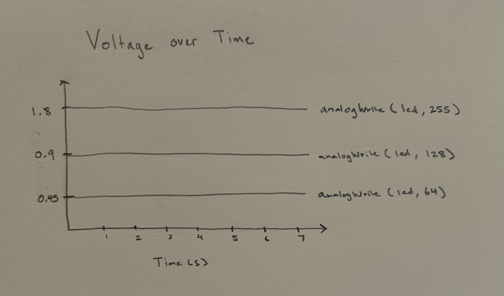

Circuit Operation

For this assignment, we were tasked with creating a circuit made up of 3 LEDs and a button. When the button is pressed, at least one of the LEDs should fade. The circuit on the left is the finished result where each LED fades in and out via the button.
For this circuit, I used 4 pins from the arduino board. Pin 2 was used as
an input for the button. If the button isn't pressed, it would pass through the
10K Ω resistor to ground. The reason I used a 10K Ω resistor is to ensure that the
arduino is protected against short circuits and to prevent the pin from "floating"
(causing random readings of LOW or HIGH). 10K is strong enough to keep the pin
LOW when the button isn't pressed but weak enough where it doesn't waste much current when
the button is pressed. If the button is pressed, it would continue to power and travel through the LEDs.
Pins 9, 10, and 11 are used identically to the pins used in assignment 1 where each
pin has a 220 Ω resistor with an LED that has a 1.8 V drop. I will put the calculation
here again for these resistors.
// Variable to store current state of button
int buttonState = 0;
void setup() {
// Sets pins 9-11 as outputs (for LEDs) and 2 as an input (for button)
pinMode(11, OUTPUT);
pinMode(10, OUTPUT);
pinMode(9, OUTPUT);
pinMode(2, INPUT);
}
void loop() {
// buttonState is read based on pin 2
buttonState = digitalRead(2);
// Checks for if the button is pressed
if (buttonState == HIGH) {
// Fades from off to on repeatedly
for (int fadeValue = 0; fadeValue <= 255; fadeValue += 5) {
// Each pin adjusts the brightness of its LED
analogWrite(11, fadeValue);
analogWrite(10, fadeValue);
analogWrite(9, fadeValue);
// 30 ms delay for when the loop executes
delay(30);
}
}
// Checks for if the button is not being pressed
else {
// LEDs are off
digitalWrite(11, LOW);
digitalWrite(10, LOW);
digitalWrite(9, LOW);
}
}
In the code, I set the pins as outputs for the LEDs and an input for the button. I then use checks for the button state to see if it's being pressed. If it is, the LEDs will fade in and out in a continuous loop. If the button isn't being pressed, the LEDs will be off. The operation of the circuit can be seen below.
1. Draw a chart where the X axis is time and the Y axis is voltage. Draw 3 lines representing the voltage across an LED with analogWrite(led, 64), analogWrite(led, 128), and analogWrite(led, 255).

2. Given your schematic, circuit, and firmware, assuming the only thing
that draws current is your LEDs, how long would your circuit run if powered by a
1200 mAh battery?
It would last for about 20 hours since the total current passing through the circuit is .06 A (or 60 mA) since we want 20 mA running through all 3 branches of the in parallel circuit. So if it was being powered by a 1200 mA per hour battery, it would be 1200/60 which is 20 hours. But this is considering that the LEDs are constantly on at 100% brightness and that the button is always pressed. But in this case, since it fades, it would take longer than 20 hours.
3. Measure and record the actual voltage across one of your LEDs when it's on.
How does this compare to the theoretical forward voltage for your LED color?
The LED voltage depends on what part of the fade you measure but when the LED is at its brightest, it's a voltage drop between 1.6-1.9 V which is close to the thoeretical forward voltage of 1.8V for red, green, and yellow LEDs.
4. AI Tools
I used AI tools just to get clarification for why we use a 10K resistor for buttons. I found that the answer has several answers of which I put in this assignment.